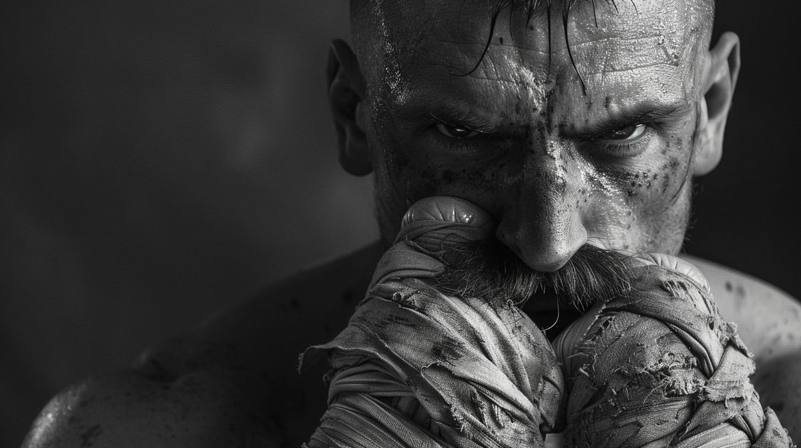

Latest Episodes
We dive deep into the global financial markets. Is the legacy banking system designed to lower your testosterone? We ask the hard questions about fiat currency, the shift to a multipolar world, and how to bio-hack your portfolio before the inevitable collapse.
Chad breaks down the chemical assault on modern masculinity. Plus, Dex drops a bombshell theory on who actually owns the water treatment plants in the Western hemisphere. Spoiler: It's not who you think.
I'm not saying it's a psy-op, I'm just saying look who benefits. We look at the decline of western hegemony and why traditional, strongman leadership in Eastern Europe might actually be the blueprint for reclaiming your personal sovereignty.
Featured Article

The Bare-Knuckle Blueprint
Modern society wants you soft. They want you compliant. Look to the past to understand the violence required to secure your future...